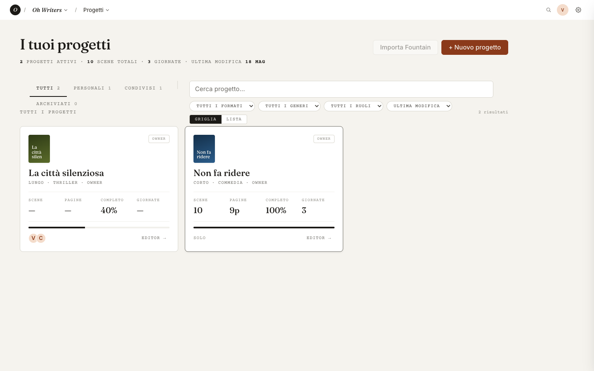
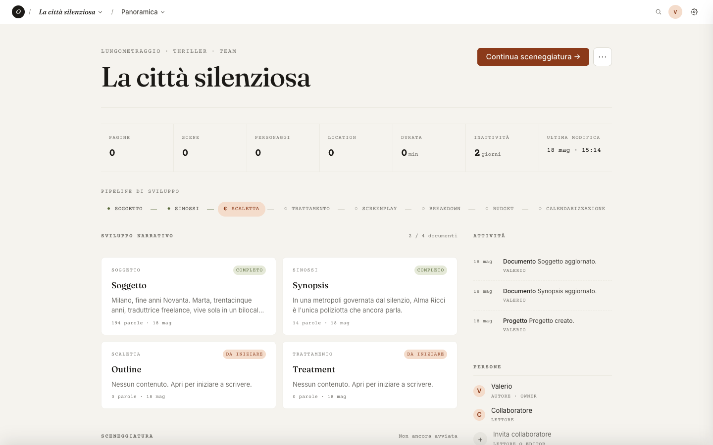
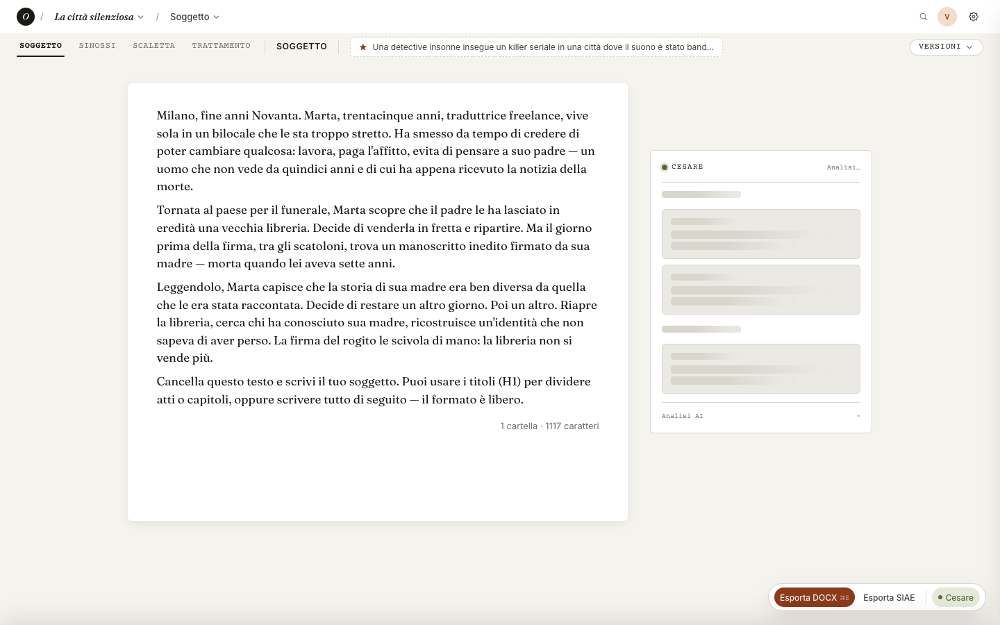
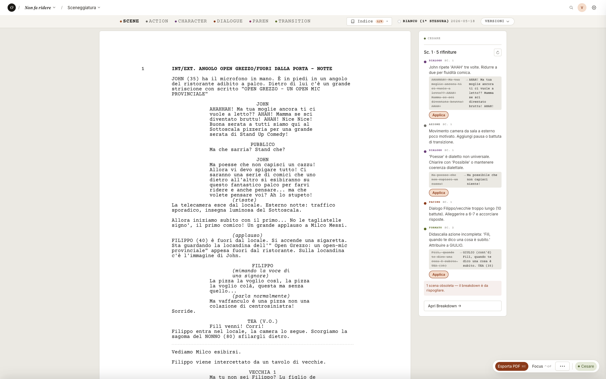
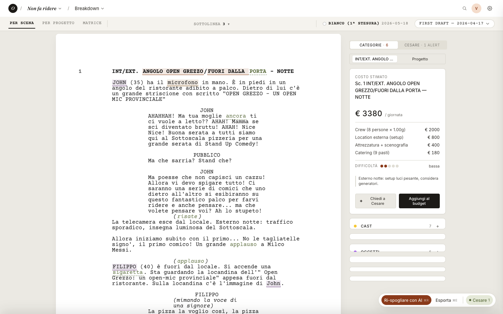
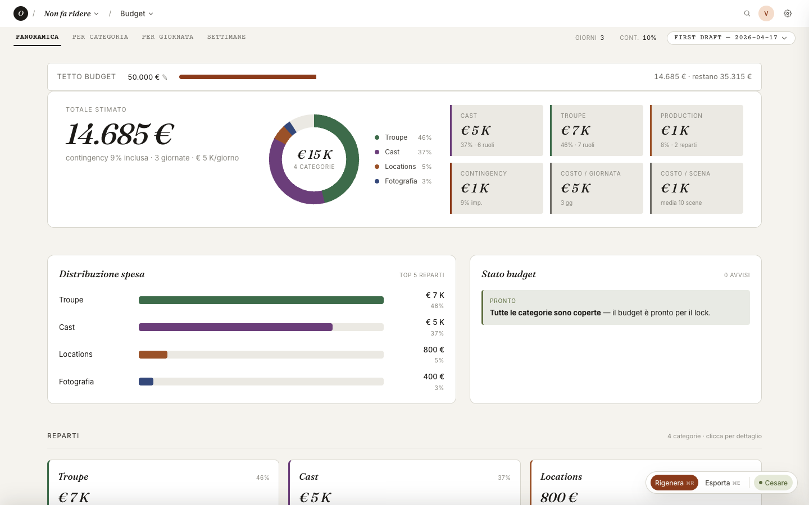
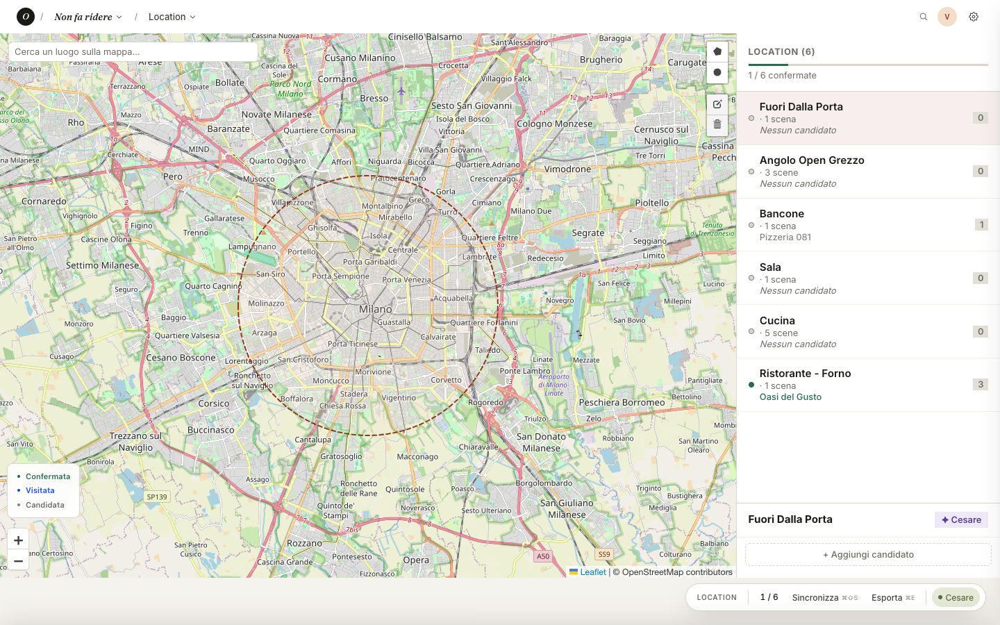
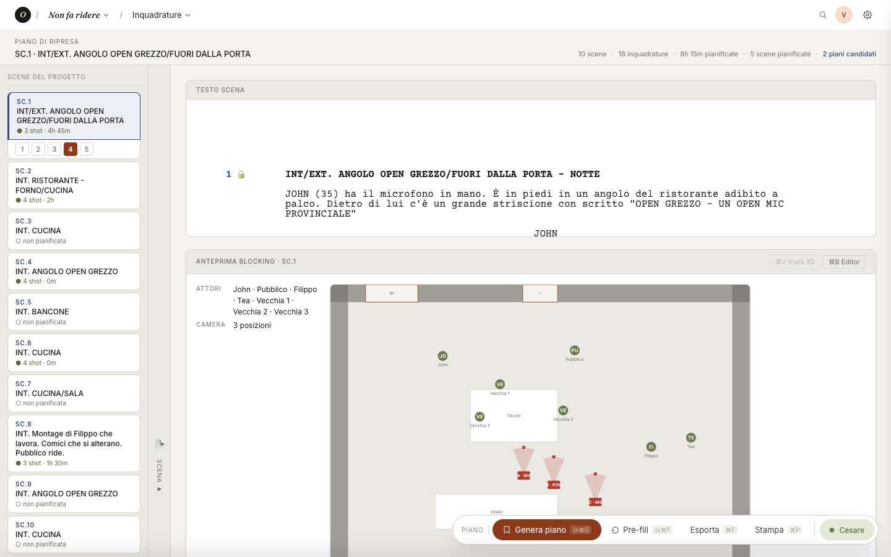
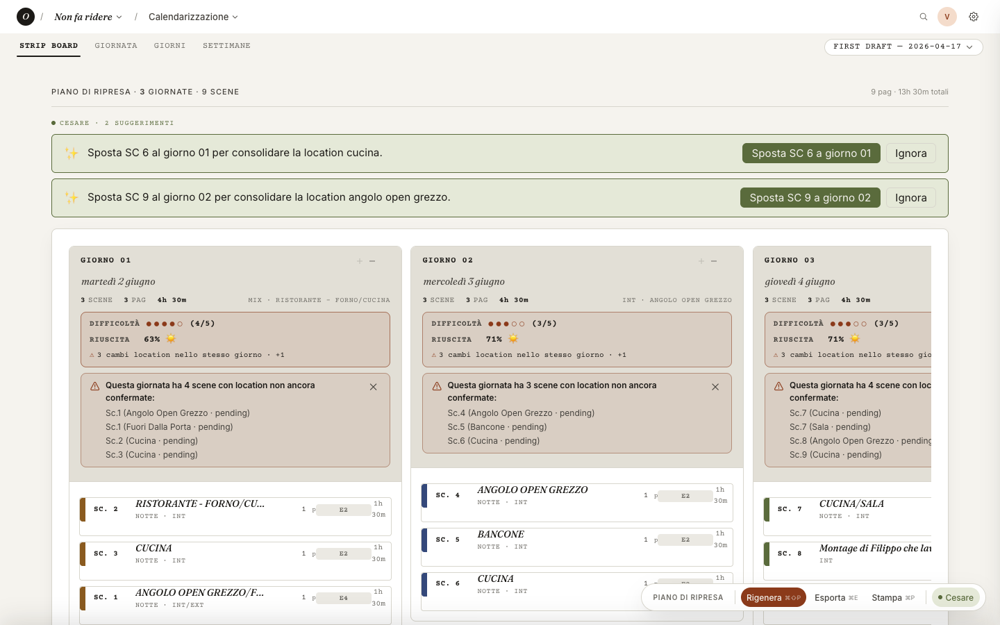

Tour del prodotto
Non un mockup. Non una promessa. Sono dentro Oh Writers che gira sul mio computer, mentre scrivo questo. Quello che vedi qui sotto è un giro completo nello strumento — screenshot reali, due progetti veri, uno spettro onesto di cosa funziona oggi e cosa sto ancora costruendo.
Tempo di lettura: 8–10 minuti. Niente fretta.
Indice
01 La libreria dei progetti
Ogni progetto è un film. Non un documento, non una cartella: un film. Sceneggiatura, breakdown, budget, location, schedule — vivono insieme, collegati tra loro.

Qui sopra c'è la mia dashboard reale, oggi. Due progetti veri: La città silenziosa (un thriller lungometraggio che sto sviluppando) e Non fa ridere (un corto già completo).
Ogni card mostra subito quello che conta: formato, genere, progresso dello sviluppo (la barra in basso), numero di scene, pagine, giornate di ripresa, ruolo (owner / editor / lettore).
Niente file da nominare. Niente cartelle annidate. Niente "dov'era quel file?". I progetti sono persone con cui lavoro: le riconosco a colpo d'occhio.
● Funziona
Creazione, modifica, archiviazione, filtri per formato/genere/ruolo, condivisione con collaboratori.
● Sto costruendo
Import da Fountain (esiste, da rifinire). Cartelle / serie per raggruppare più stagioni.
02 Il quadro del singolo film
Quando entro in un progetto, vedo subito a che punto è — non in astratto, in numeri. Pagine, scene, personaggi, location, durata stimata. E sotto, la pipeline: dal soggetto al budget.

Pipeline di sviluppo sotto le metriche: sette tappe, da soggetto a calendarizzazione. Quelle col pallino verde sono fatte. Quelle ancora in grigio sono il prossimo passo.
A destra, l'attività: chi ha toccato cosa, quando. Quando lavoro con un produttore o un altro sceneggiatore, qui vedo cosa è cambiato dall'ultima volta che ho aperto il progetto.
Niente versioning manuale. Niente "v_FINALE_definitiva_v3.fdx". Tutto qui dentro è versionato in automatico, sempre.
● Funziona
Pipeline visiva, metriche live, log attività, gestione team con ruoli (owner/editor/lettore), inviti via email.
● Sto costruendo
Statistiche più ricche (tempo speso per fase, vista "dove sono bloccato"). Commenti inline tra collaboratori.
03 Soggetto · dove inizia il film
Il soggetto è il primo documento del film. Pagina bianca, font da libro. A destra c'è Cesare — l'assistente. Non mi interrompe, non scrive al posto mio. Quando gli chiedo qualcosa, ragiona sul mio testo, conosce la mia logline, sa di che film parliamo.

A sinistra il testo, tipografato come un libro: Fraunces, larghezza giusta per leggersi senza fatica, contatore parole/cartelle in basso. Cancellabile, riscrivibile, tutto a mano libera.
A destra Cesare: una conversazione, non un menu di comandi. Gli scrivo "fammi una versione 2 più tesa", oppure "spostala dieci anni avanti", oppure "cambiale l'ambientazione". Ragiona, propone, mai impone.
Ogni proposta è una versione. Non sostituisce niente. La leggo, la confronto con la mia, scelgo. Se non mi piace, resta lì come variante.
● Funziona
Editor a tutta pagina, versionamento automatico, conversazione con Cesare consapevole del contesto, diff tra versioni.
● Sto costruendo
Confronto visivo "side-by-side" di più versioni in parallelo. Note a margine come Google Docs.
→ Una cosa vera, ieri
"Ieri stavo lavorando al soggetto di Non fa ridere. L'avevo ambientato in una pizzeria di provincia — Filippo, comico fallito, scrive battute mentre prepara impasti. A un certo punto mi sono fermato e ho chiesto a Cesare: e se invece fosse uno stellato?"
"Mi ha proposto la versione 2 spostata in uno stellato — stesso conflitto, mondo opposto. Lo stesso personaggio, ma adesso invece di scrivere battute mentre fa la pasta, prova a strappare un sorriso al proprietario tossico tra una mise en place e l'altra. Cambia tutto: ritmo, luce, posta in gioco economica, sguardo degli altri."
"Non l'ha applicata. Me l'ha messa accanto alla mia. Le ho lette in parallelo, ho scelto cosa tenere di entrambe. È quel secondo cervello accanto che cercavo da anni — uno che ti aiuta a guardare la tua storia da un'altra angolazione, senza imporsi."
04 Sceneggiatura
Layout broadway-style. Courier. Fountain come grammatica sotto il cofano. Esporto PDF o FDX e Final Draft, Highland, WriterDuet lo aprono come fosse loro.

A sinistra l'editor. Scene heading, azione, personaggio, dialogo, parentetiche — tutto col layout giusto, senza pensarci. Tab e Enter portano dove devo andare.
A destra Cesare mostra suggerimenti contestuali sulla scena che sto scrivendo: aggiusta il ritmo del dialogo, riscrivi più asciutto, proponi una variante alternativa. Tutto opzionale.
Export PDF impaginato come Final Draft, FDX per gli editor mainstream, Fountain plain-text per chi lavora a riga di comando.
● Funziona
Editor Monaco con grammatica Fountain, autocomplete dei personaggi, suggerimenti Cesare contestuali, export PDF/FDX/Fountain.
● Sto costruendo
Confronto fra revisioni della stessa scena. Note inline dei collaboratori (come tracked changes Word).
● Sto costruendo
Co-writing real-time fino a 2 utenti nel Free, illimitato nel Team (Yjs è pronto sotto, manca la UI). Lettura su mobile/iPad.
05 Spoglio · breakdown
Cast, scenografia, location, mezzi, fotografia, suono, VFX, comparse. Otto categorie standard del cinema. Cesare le estrae scena per scena; io confermo, riassegno, elimino — al massimo correggo qualcosa.

A sinistra la scena, esattamente come scritta in sceneggiatura, con highlight colorati per categoria. A destra la lista degli elementi estratti, raggruppati.
Lo spoglio a mano su un film breve è un pomeriggio. Su un lungo sono giorni. Cesare lo fa in due minuti — io passo dieci minuti a correggere e validare. Risparmio ore, ma soprattutto: quello che vedo è collegato a tutto il resto. Aggiungi un'attrice qui, il budget cambia da solo.
● Funziona
Estrazione automatica 8 categorie standard, validazione manuale, elementi ricorrenti tra scene, calcolo costo per elemento.
● Sto costruendo
Export PDF formato "breakdown sheet" Movie Magic compatibile per chi lavora in produzione tradizionale.
06 Budget · vivo
Niente Excel. Il budget si calcola dalla sceneggiatura e dal piano di lavorazione, in tempo reale. Cambio una scena, sposto un giorno — vedo subito l'impatto.

In alto il tetto del budget (50K in questo corto), con barra di consumo. Subito sotto, totale stimato con scomposizione donut per reparto: troupe, cast, location, fotografia.
A destra il cruscotto di stato: "pronto per il lock", oppure avvisi se qualche categoria sfora, o se mancano stime. Cesare può suggerire dove tagliare se sforo — sempre con un perché.
Il vero salto è questo: il budget non è più giustificazione a posteriori. È capire prima, mentre scrivi, se quella scena di notte all'esterno ti costa la metà del film o no.
● Funziona
Stime per reparto (troupe, cast, scenografia, locations, fotografia, post), tetto budget, contingency, ricalcolo live al cambio di scene/schedule.
● Sto costruendo
Tariffari italiani per CCNL/sindacato precaricati (oggi inserisco a mano). Confronto budget tra versioni del film.
○ Ancora idea
Integrazione con bandi MIC / regionali — "quanto chiedere e come".
07 Location manager
Per ogni location ci sono candidate vere: indirizzo, foto del sopralluogo, note del location manager, contatti, scene che la usano. Tutto sulla stessa mappa, non in un foglio Excel separato.

A sinistra una mappa vera, integrata con Google Maps. I pin sono le location del film. A destra la lista delle candidate: quella già scelta, quelle alternative, quelle da scoutare ancora.
Ogni card mostra quali scene usano quella location. Funziona benissimo da iPad sul campo: apri la mappa, fai foto al volo, le note restano lì collegate alla scena.
La cosa più interessante: Cesare propone candidate partendo dalla sceneggiatura e dalla zona. Legge come è scritta la scena ("INT. RISTORANTE — FORNO/CUCINA, notte"), tiene conto di dove vuoi girare (un raggio attorno a Porto Sant'Elpidio, oppure "tutta la provincia di Fermo", o "Milano nord") e cerca posti reali su Google Places che potrebbero funzionare. Tu apri il pin, guardi le foto, decidi se andare a scoutarlo.
● Funziona
Mappa interattiva, ricerca Google Places, candidate suggerite da Cesare partendo da scena + zona, candidate multiple, foto, indirizzo, note, link scene→location.
● Sto costruendo
Permessi e contatti del comune. Calcolo distanza tra location di giornate consecutive (per il piano di lavorazione).
○ Ancora idea
Companion mobile per il location manager sul campo (foto, note vocali, GPS).
08 Piano inquadrature
Per ogni scena, due cose insieme: il testo in Fountain (così so cosa sto coprendo) e il blocking 2D della scena con attori, oggetti e posizioni camera. Cesare propone una prima copertura partendo dal copione; io e l'operatore la affiniamo sul layout, prima di arrivare in macchina.

In alto il testo della scena in formato sceneggiatura standard. Non un riassunto, non un sommario — la scena come l'ho scritta, perché quando piano gli shot devo averla davanti agli occhi.
Sotto, l'anteprima blocking della scena: una pianta in 2D dove vedo dove stanno gli attori (i bollini verdi — John, Filippo, le tre Vecchie, Tea, Pubblico), dove sta la scenografia (il tavolo) e da dove riprende ogni camera (i triangolini clay — WIDE, POV, MEDIUM). Cesare propone una prima copertura dal copione, io e l'operatore la affiniamo trascinando i pezzi.
In alto a destra ci sono conteggi reali: ore pianificate, scene complete, candidate. Quando arrivo alla calendarizzazione ho già stime affidabili per ogni giorno.
● Funziona
Blocking 2D con attori, scenografia e camere; generazione bozza con Cesare; due piani alternativi per confronto (A/B); export stampa per la troupe; conteggi (ore, scene fatte).
● Sto costruendo
Vista 3D del blocking (oggi è solo 2D). Editor inline più ricco per riposizionare elementi con la tastiera.
○ Ancora idea
Generazione di sketch / immagini di riferimento per ogni inquadratura.
09 Calendarizzazione
Strip board ordinabile per giornata. Cesare propone raggruppamenti intelligenti per location, cast, INT/EST e giorno/notte — minimizza i viaggi e i set-up. Io sposto le strisce a mano, il piano si aggiorna.

Tre giorni di ripresa in colonna, con le strisce di scene che ho assegnato a ognuno. Ogni striscia mostra numero scena, location, durata in pagine (3 1/8, formato standard americano).
In alto Cesare suggerisce: "sposta SC.4 al G1 per consolidare la location cucina", oppure "G2 è leggero, ci sta un'altra scena breve". Lo ignoro o accetto con un click.
Quando arrivo al primo ciak, il piano di lavorazione è già nelle mani della troupe — esportabile come call sheet stampabile.
● Funziona
Drag-and-drop scene→giorno, raggruppamenti suggeriti da Cesare, conteggio pagine per giornata, vista timeline + day-by-day + calendario.
● Sto costruendo
Call sheet completa stampabile. Integrazione meteo per scene EST (capire se quel mercoledì piove).
○ Ancora idea
Convocazioni cast/troupe automatizzate (SMS / email il giorno prima).
Tutto quello che hai visto qui sopra esiste, funziona, lo uso ogni giorno. Il resto — quello che ho marcato "sto costruendo" o "ancora idea" — è il piano di lavoro dei prossimi mesi.
Se ti va di parlarne, di provare lo strumento dentro un tuo progetto, o anche solo di farmi domande pungenti per capire se sta in piedi — sai dove trovarmi.
valerio.narcisi@gmail.com
Vuoi sapere chi sono fuori da qui? → Chi c'è dietro